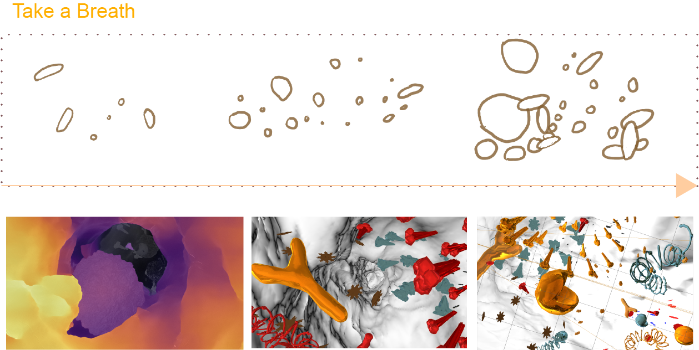
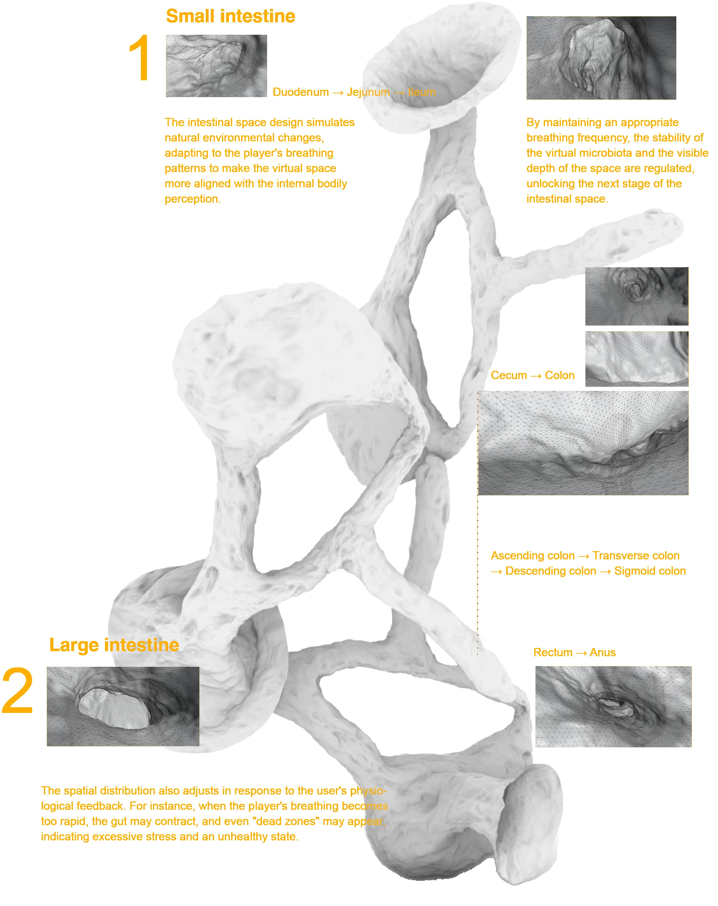

Healthy microbiota are primarily yellow or blue, representing balance and harmony. However, when the player's breathing becomes shallow or anxious, some microbiota turn red, displaying chaotic or irregular movement, reflecting stress and discomfort.
The Brainy Gut
What I did
In this project, I served as an interaction designer and technical integrator, using mixed-media tools including Unreal Engine, Cinema 4D, biosensors and micro-screens to create an interactive installation exploring the gut-brain axis. The system translates physiological processes into visual experiences, allowing users to control virtual microbial growth through breathing and intuitively experience mind-body connections.
Introduction
Interactive imagery visualizes the essence of the gut-brain axis connection through the movement of colonies. The system uses an "externalized gut," where changes in virtual colonies reflect the body's health status. The movement of the colonies is driven by the user's breath, with breathing patterns influencing the growth and transformation of the virtual gut, gradually mapping out its entire structure.
Visual Representation of Microbiota

Virtual Scene Creation

Externalized Gut Setup
The virtual microbiota represents the dynamic changes of microorganisms within the gut, driven by the player's physiological responses, particularly breathing. By controlling their breathing frequency (e.g., slow or rapid), players influence the growth, reproduction, and simulation of the gut environment, thereby indirectly exploring the entire intestinal space.
Visual Details

Experience Journey Map

Testing
Visualizing how the installation responds to breath and neural feedback